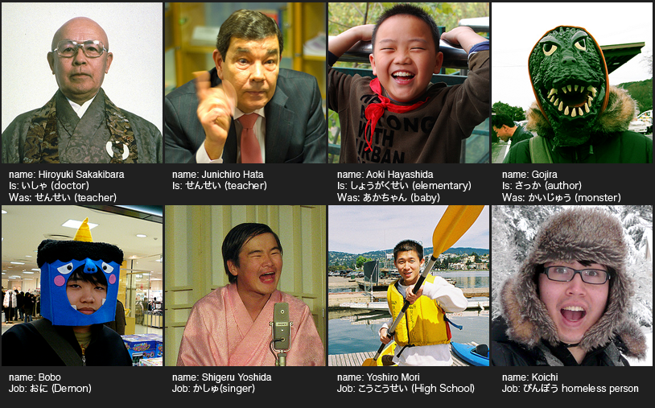

The “Job Board” Part 2
“The thing that a lot of people cannot comprehend is that Mother Nature doesn’t have a bullet with your name on it, she has millions of bullets inscribed with ‘to whom it may concern’”

Alright, now that you know a lot of the “job” words (not all of them are real jobs in the Job Board image, so you won’t know all of them, I’m afraid), and now that you understand AはB (A is B), we can start practicing. I’m going to ask you questions, and then all you have to do is translate the question and then create the response to that question. Let’s get started. If you’re confused, check out the example that’s on the previous page.
Q: Boboさん は おに ですか。
Is Bobo-san a demon?
はい、Boboさん は おに です。
Yes, Bobo-san is a demon.
Q: あおきさん は こうこうせい ですか。
Is Aoki-san a high school student?
いいえ、あおきさん は こうこうせい じゃありません。 あおきさん は しょうがくせい です。
No, Aoki-san is not a high school student. Aoki-san is a elementary student.
Q: ごじらさん は せんせい ですか？
Is Godzilla a teacher?
いいえ、ごじらさん は せんせい じゃありません。ごじらさん は さっか です。
No, Godzilla is not a teacher. Godzilla is an author.
Q: ぼぼさん は さっか ですか。
Is Bobo an Author?
いいえ、ぼぼさん は さっか じゃありません。ぼぼさん は おに です。
No, Bobo-san is not an author. Bobo-san is a demon.
Q: はたさん は せんせい ですか？
Is Hata-san a teacher?
はい、はたさん は せんせい です。
Yes, Hata-san is a teacher.
Of course, you can also use past tense as well. Notice how some of them have a “was” category? Let’s give it a shot.
Q: あおきさん は あかちゃん でしたか？
Was Aoki-san a baby?
はい、あおきさん は あかちゃん でした。
Yes, Aoki-san was a baby.
Q: ひろゆきさん は せいじか でしたか？
Was Hiroyuki a politician?
いいえ、ひろゆきさん は せいじか じゃありませんでした。ひろゆきさん は せんせい でした。
No, Hiroyuki was not a politician. Hiroyuki was a teacher.
There’s a bit more we can do with this and this grammar, but we’ll practice it more on the practice page.
Before that, though, I want you to take this grammar (and the job / people stuff) and apply it to your own life a little bit. That’ll be in two pages. First, nouns and radicals!